Anlage 3 Bezeichnung der Fahrzeuge
Binnenschifffahrtsstraßen-Ordnung
I. Allgemeines
1. Die nachstehenden Bilder dienen nur zur Erläuterung. Es ist stets vom Wortlaut der Verordnung auszugehen, der allein Geltung hat.
2. Ein Schubverband, dessen Länge 110,00 m nicht überschreitet, gilt als einzeln fahrendes Fahrzeug von gleicher Länge.
3. Zeichenerklärung:
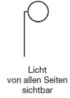 | 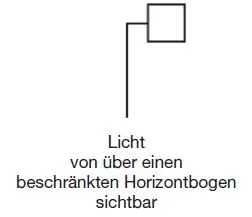 | 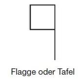 | ||
Ein Licht, das dem Blick des Beschauers tatsächlich entzogen ist, ist mit einem Punkt in der Mitte versehen. Bilder mit schwarzem Hintergrund enthalten die Lichter bei Nacht. | ||||
Nachtbezeichnung | Bild | Tagbezeichnung | ||
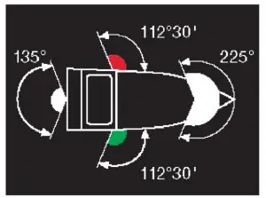 | 1 | |||
§ 3.01 | Begriffsbestimmungen und Anwendungen Nummer 1: Der Horizontbogen, über den das Topplicht, die Seitenlichter und das Hecklicht sichtbar sind | |||
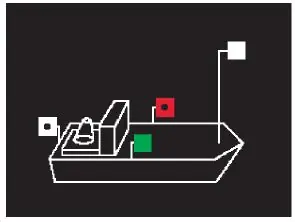 | 2 | |||
§ 3.08 | Einzeln fahrendes Fahrzeug mit Maschinenantrieb Nummer 1: Länge bis 110,00 m | |||
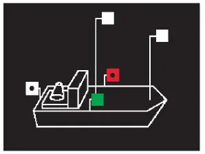 | 3 | |||
§ 3.08 | Einzeln fahrendes Fahrzeug mit Maschinenantrieb Nummer 1 und 2: Länge mehr als 110,00 m | |||
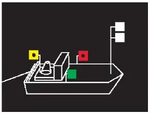 | 4 | 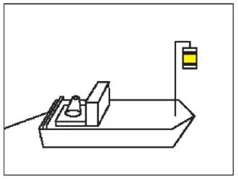 | ||
§ 3.09 | Schleppverband Nummer 1: Fahrzeug mit Maschinenantrieb, das allein an der Spitze eines Verbandes fährt | |||
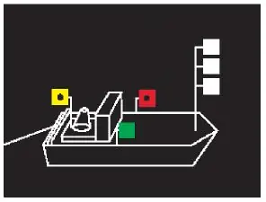 | 5/4 | 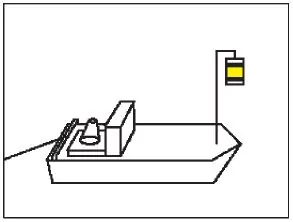 | ||
§ 3.09 | Schleppverband Nummer 2: Fahrzeuge mit Maschinenantrieb, die zu mehreren nebeneinander an der Spitze des Verbandes fahren | |||
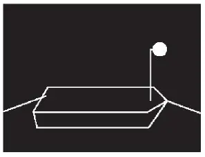 | 6 | 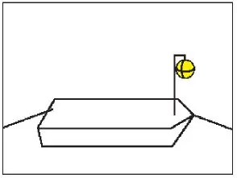 | ||
§ 3.09 | Schleppen Nummer 3 Satz 1: Geschlepptes Fahrzeug | |||
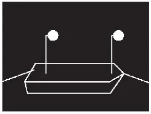 | 7 | 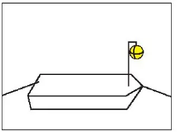 | ||
§ 3.09 | Schleppen Nummer 3 Satz 3 Buchstabe a: Anhanglänge des Verbandes über 110,00 m | |||
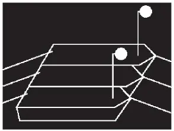 | 8 | 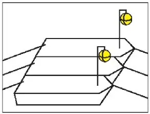 | ||
§ 3.09 | Schleppen Nummer 3 Satz 3 Buchstabe b: Anhanglänge des Verbandes mit mehr als zwei längsseits verbundenen Fahrzeugen | |||
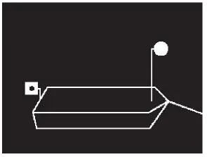 | 9 | 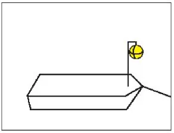 | ||
§ 3.09 | Schleppen Nummer 3 und 4: Das Fahrzeug als letzte Anhanglänge eines Schleppverbandes | |||
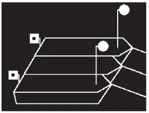 | 10 | 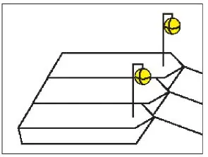 | ||
§ 3.09 | Schleppen Nummer 3 und 4: Mehrere Fahrzeuge als letzte Anhanglänge eines Schleppverbandes | |||
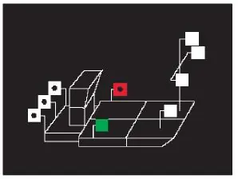 | 11 | |||
§ 3.10 | Schubverband Nummer 1: Schubverband | |||
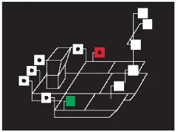 | 12 | |||
§ 3.10 | Schubverband Nummer 1 Buchstabe c: Außer dem schiebenden Fahrzeug zwei oder mehr von hinten in ganzer Breite sichtbare Fahrzeuge | |||
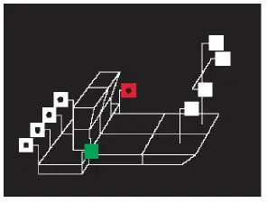 | 13 | |||
§ 3.10 | Schubverband Nummer 2: Zwei schiebende Fahrzeuge | |||
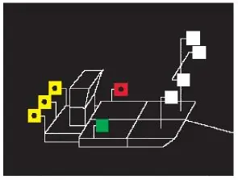 | 14 | 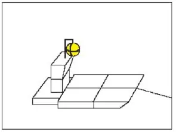 | ||
§ 3.10 | Schubverband Nummer 3 und 4: Geschleppter Schubverband | |||
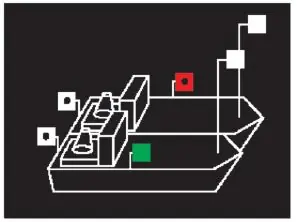 | 15 | |||
§ 3.11 | Gekuppelte Fahrzeuge Nummer 1: Zwei Fahrzeuge mit Maschinenantrieb | |||
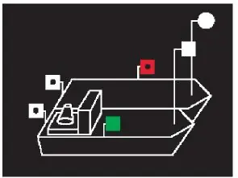 | 16 | |||
§ 3.11 | Gekuppelte Fahrzeuge Nummer 1: Ein Fahrzeug mit Maschinenantrieb und ein Fahrzeug ohne Maschinenantrieb | |||
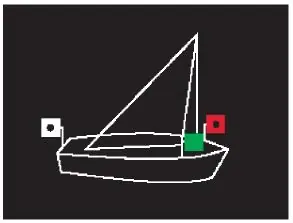 | 17 | |||
§ 3.12 | Fahrzeug unter Segel | |||
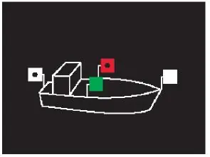 | 18 | |||
§ 3.13 | Kleinfahrzeug Nummer 1 Buchstabe a, b und c: Kleinfahrzeug mit Maschinenantrieb | |||
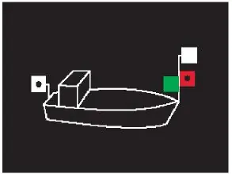 | 19 | |||
§ 3.13 | Kleinfahrzeug Nummer 1 Buchstabe d, e und f: Kleinfahrzeug mit Maschinenantrieb mit Seitenlichtern unmittelbar nebeneinander oder in einer einzigen Laterne | |||
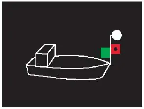 | 20 | |||
§ 3.13 | Kleinfahrzeug Nummer 1 Buchstabe f: Kleinfahrzeug mit Maschinenantrieb mit einem von allen Seiten sichtbaren Licht | |||
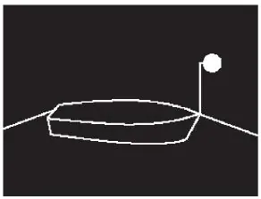 | 21 | |||
§ 3.13 | Kleinfahrzeug Nummer 3: Geschleppt oder längsseits gekuppelt | |||
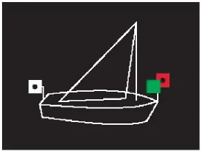 | 22 | |||
§ 3.13 | Kleinfahrzeug Nummer 4: Unter Segel fahrend | |||
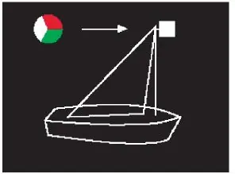 | 23 | |||
§ 3.13 | Kleinfahrzeug Nummer 4: Unter Segel fahrend mit einer einzigen Laterne am Topp | |||
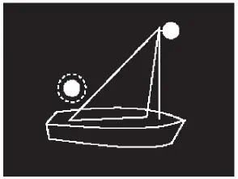 | 24 | |||
§ 3.13 | Kleinfahrzeug Nummer 4: Unter Segel fahrend mit einem von allen Seiten sichtbaren Licht und bei Annäherung eines anderen Fahrzeugs ein zweites Licht zeigend | |||
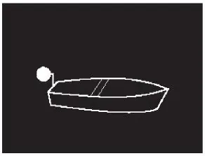 | 25 | |||
§ 3.13 | Kleinfahrzeug Nummer 5: Einzeln weder mit Antriebsmaschine noch unter Segel fahrend | |||
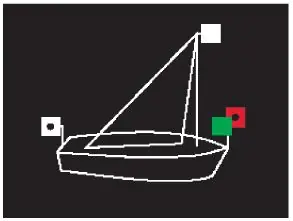 | 26 | 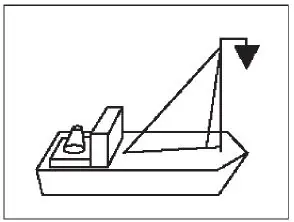 | ||
§ 3.13 | Kleinfahrzeug Nummer 1 und 6: Unter Segel und gleichzeitig mit einer Antriebsmaschine fahrend | |||
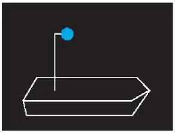 | 27a | 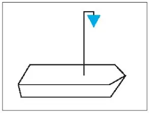 | ||
27b | 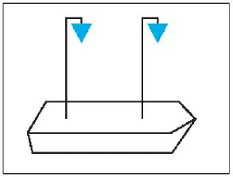 | |||
§ 3.14 | Fahrzeug bei Beförderung bestimmter gefährlicher Güter Nummer 1: Bestimmte entzündbare Stoffe nach Kapitel 3.2 Tabelle A ADN | |||
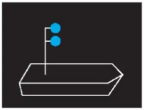 | 28a | 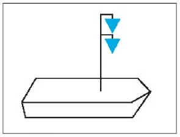 | ||
28b | 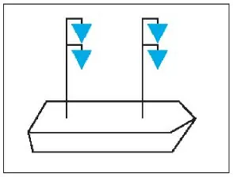 | |||
§ 3.14 | Fahrzeug bei Beförderung bestimmter gefährlicher Güter Nummer 2: Bestimmte gesundheitsschädliche Stoffe nach Kapitel 3.2 Tabelle A ADN | |||
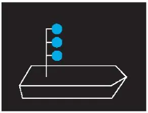 | 29a | 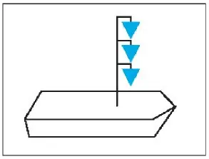 | ||
29b | 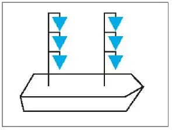 | |||
§ 3.14 | Fahrzeug bei Beförderung bestimmter gefährlicher Güter Nummer 3: Bestimmte explosive Stoffe nach Kapitel 3.2 Tabelle A ADN | |||
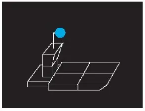 | 30 | 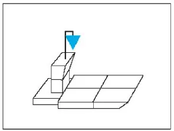 | ||
§ 3.14 | Fahrzeug bei Beförderung bestimmter gefährlicher Güter Nummer 4: Schubverband | |||
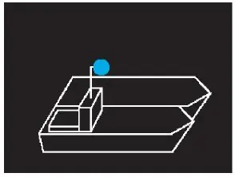 | 31 | |||
§ 3.14 | Fahrzeuge bei Beförderung bestimmter gefährlicher Güter Nummer 4: Gekuppelte Fahrzeuge | |||
32 | ||||
§ 3.14 | Fahrzeuge bei Beförderung bestimmter gefährlicher Güter Nummer 5: Schubverband mit zwei schiebenden Fahrzeugen | |||
33 | ||||
§ 3.15 | Fahrzeug, das zur Beförderung von mehr als zwölf Fahrgästen zugelassen ist und dessen Länge unter 20,00 m liegt | |||
34 | ||||
§ 3.16 | Fähre Nummer 1: Nicht frei fahrende Fähre | |||
35 | ||||
§ 3.16 | Fähre Nummer 2: Oberster Buchtnachen oder Döpper bei einer Gierfähre am Längsseil | |||
36 | ||||
§ 3.16 | Fähre Nummer 3: Frei fahrende Fähre | |||
37 | ||||
§ 3.17 | Fahrzeug, das einen Vorrang besitzt | |||
38 | ||||
§ 3.18 | Manövrierunfähiges Fahrzeug | |||
39 | ||||
§ 3.19 | Schwimmkörper und schwimmende Anlage | |||
40 | ||||
§ 3.20 | Fahrzeug beim Stillliegen Nummer 1: Fahrzeug mit Ausnahme eines Kleinfahrzeugs, einer Fähre und eines schwimmenden Gerätes bei der Arbeit | |||
41 | ||||
§ 3.20 | Fahrzeug beim Stillliegen Nummer 2: Kleinfahrzeug mit Ausnahme des Beiboots | |||
42 | ||||
§ 3.21 | Stillliegendes Fahrzeug bei Beförderung bestimmter gefährlicher Güter | |||
43 | ||||
§ 3.21 | Stillliegendes Fahrzeug bei Beförderung bestimmter gefährlicher Güter: Schubverband | |||
44 | ||||
§ 3.21 | Stillliegende Fahrzeuge bei Beförderung bestimmter gefährlicher Güter: Gekuppelte Fahrzeuge | |||
45 | ||||
§ 3.22 | Fähre, die an ihrer Anlegestelle stillliegt Nummer 1: Nicht frei fahrende Fähre | |||
46 | ||||
§ 3.22 | Fähre, die an ihrer Anlegestelle stillliegt Nummer 2: Frei fahrende Fähre | |||
47 | ||||
§ 3.23 | Schwimmkörper und schwimmende Anlage | |||
48 | ||||
§ 3.24 | Fischereifahrzeug mit Netz oder Ausleger | |||
49a | ||||
49b | ||||
§ 3.25 | Schwimmendes Gerät bei der Arbeit sowie festgefahrenes oder gesunkenes Fahrzeug Nummer 1 Buchstabe a: Durchfahrt frei an beiden Seiten | |||
50a | ||||
50b | ||||
§ 3.25 | Schwimmendes Gerät bei der Arbeit sowie festgefahrenes oder gesunkenes Fahrzeug Nummer 1 Buchstabe a und b: Durchfahrt frei an einer Seite | |||
51 | ||||
§ 3.25 | Schwimmendes Gerät bei der Arbeit sowie festgefahrenes oder gesunkenes Fahrzeug Nummer 1 Buchstabe c: Schutz gegen Wellenschlag; Durchfahrt frei an beiden Seiten | |||
52 | ||||
§ 3.25 | Schwimmendes Gerät bei der Arbeit sowie festgefahrenes oder gesunkenes Fahrzeug Nummer 2: Festgefahrenes oder gesunkenes Fahrzeug; Durchfahrt frei an einer Seite | |||
53 | ||||
§ 3.26 | Fahrzeug, Schwimmkörper und schwimmende Anlage, dessen oder deren Anker die Schifffahrt gefährden kann Nummer 1 und 3: Fahrzeug und Anker | |||
54 | ||||
§ 3.26 | Fahrzeug, Schwimmkörper und schwimmende Anlage, dessen oder deren Anker die Schifffahrt gefährden kann Nummer 2 und 3: Schwimmkörper, schwimmende Anlage und dessen oder deren Anker | |||
55 | ||||
§ 3.26 | Fahrzeug, Schwimmkörper und schwimmende Anlage, dessen oder deren Anker die Schifffahrt gefährden kann Nummer 4: Anker eines schwimmenden Gerätes | |||
56 | ||||
§ 3.27 | Fahrzeug der Überwachungsbehörden, der Feuerwehr, der Zollverwaltung, der Bundespolizei, des Bundeskriminalamtes, Wasserrettungsfahrzeug im Rettungseinsatz | |||
57 | ||||
§ 3.28 | Fahrzeug, das Arbeiten in der Wasserstraße ausführt | |||
§ 3.28a | Mehrzweckfahrzeug der Bundeswehr | |||
58 | ||||
§ 3.29 | Schutz gegen Sog und Wellenschlag | |||
59 | ||||
§ 3.30 | Notzeichen | |||
60 | ||||
§ 3.31 | Satz 1 Buchstabe a Verbot, das Fahrzeug zu betreten | |||
60a | ||||
§ 3.31 | Satz 1 Buchstabe b Verbot, das Fahrzeug zu betreten | |||
61 | ||||
§ 3.32 | Satz 1 Buchstabe a Verbot, zu rauchen, ungeschütztes Licht oder Feuer zu verwenden | |||
61a | ||||
§ 3.32 | Satz 1 Buchstabe b Verbot, zu rauchen, ungeschütztes Licht oder Feuer zu verwenden | |||
62 | ||||
§ 3.33 | Verbot des Stillliegens nebeneinander | |||
§ 28.04 | Nummer 8 Buchstabe a Doppelbuchstabe aa Sorgfaltspflicht beim Bunkern von Flüssigerdgas (LNG) | |||
63 | ||||
§ 6.04 | Begegnen Nummer 3: Begegnen an der Steuerbordseite | |||
64 | ||||
§ 8.12 | Bezeichnung beim Einsatz von Tauchern | |||
§§ 21.21, 22.21, 23.21, 24.21 Bezeichnung eines Sportfahrzeugs beim Einsatz von Tauchern | ||||
65 |  | |||
§ 2.06 | Kennzeichnung der Fahrzeuge, die Flüssigerdgas (LNG) als Brennstoff nutzen |